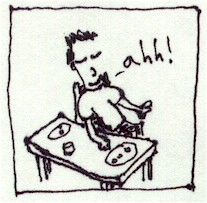

Icicle Creek Climbing
September 19-20, 1998
Saturday Steve and I climbed 5 routes at the Swauk Pinnacles near Swauk Pass.We had a great time and climbed non-stop, quitting for pizza in Cashmere at dusk. My memories of the routes are as follows.
First was Ann’s Anthill, on Little Sphinx, a class 5.0 route to the top of the rock. I led this one, finding many wonderful protection opportunities. Steve followed, and we rapped down. The climbing is not very memorable, but hey, it was my first lead!
Next was Bastet, on the west side of the rock, rated at 5.6. Steve led into a little depression under an overhang, clipping a bolt. Then he moved out to the left and to the top with a daring move. This one was pretty fun and challenging.
Then we did The Cleft on Rock of Ages, rated at 5.6. I led this one and got fairly sketched out escaping an overhanging off-width crack. With my arm jammed insecurely I scrabbled for handholds on the adjoining face, finding nothing to pull me out of the crack. My muscles started trembling and I thought about the consequences of a fall, which would be at least a small pendulum. Finally, I escaped, somewhat shaken. Steve did a lieback, finding it much easier. This was a lesson for me to think before blindly getting out into a sketchy situation. I think I learned well, because I overcame difficulties with thought rather than force for much of the rest of the trip.
Then we walked for an hour, trying to find The Sentinel, which sported a 5.6 crack route “Return to Rock.” We finally found it and Steve led a very enjoyable crack to a good stance before a monster crack. Steve went up a bit, finding nowhere to rest. His arms tired, but there was no protection. He had to come down a bit and place a cam in an adjoining horizontal crack. This took all his effort, so I lowered him off the cam and went up myself to attempt the finish. Indeed the crack was tough! I placed another cam higher up, then heaved to the top with my last gasp. I belayed Steve up from a cool, exposed stance.
We finished the day with a long walk back to The Sphinx where I led Anubis, again 5.6. This was a spectacular climb to finish the day. The climbing was hard and very exposed, requiring a “stepping-into-the-void” type move right before a walk-off ledge. Flushed with success on the ledge, I decided to climb to bolts on the very top. There was incredible rope drag at the end of this long pitch. I was really hauling the rope up through the crux crack below. Immensely satisfied, I clipped to the anchors and Steve came up. We agreed that this was one of the best and toughest climbs, with a great view all the way up and a comfy belay ledge on the top. I’d like to do this one again!
Later we met other climbers who expressed amazement over the rope drag on Anubis, so it wasn’t just us!

After excellent pizza in Cashmere, we bivied in an apple orchard in the hills to the north. We planned to do two routes at Peshastin in the morning, then maybe the Castle outside of Leavenworth. Both Peshastin routes were 2 pitches each, and the Castle was three, so we had an ambitious day planned.
Dozens of howling coyotes woke us at midnight. Many of them were extremely close! We had intermittent rain, then a real shower around 5 am. Apples fell from the trees all night.
Despite the rain, Peshastin was dry, a real boon. We hiked up to Dinosaur Slab to begin the two-pitch “Potholes.” Steve led the first, facing no protection for the lower third of the route. He placed a hex but it popped out due to rope movement. There was an exciting 5.7+ move on a mini-overhang, thankfully protected by bolts. Steve brought me up, and I continued on lead for pitch two, rated at 5.8. The fun and challenging route was bolt-protected until the last 20 feet. The guidebook suggested a cam, but I couldn’t find anywhere to place one. I ran the rope out, ending up puzzled in a little cavelet. I must have spent 15 minutes standing here, looking for protection and a way out…finding neither! An attempt to move right back to the face had to be aborted with careful downclimbing. I could see the anchor bolts so close!
Finally, the sequence came to me…stemming against one wall, use one good handhold to then stem against the other wall, then grab a positive hold outside the cave/chimney to escape. I was clipped in moments later and belaying Steve up. He found the route very challenging, however, he made short, easy work of the chimney which gave me so much trouble. We enjoyed the view, and carefully rapped down the two pitches.
Potholes had taken all morning, so we decided to head to the Castle now and skip the other route on Martian Slab we wanted to do. We found the Castle, an impressive tower over the Wenatchee River. Climbers were milling about everywhere, and we doubted that the climb would be open. A woman was making the exposed step-across from the top of Jello Tower (end of pitch 1) to the wall of the Castle, but the 1st pitch was free. We hurriedly roped up, all the people around making us nervous! Steve led, fighting sweaty hands in the greasy polished chimney. He was able to place a nut, a cam and a hex. Once, his leg was caught by the rope, but he worked through it, much to my relief! Steve reached the top, and I followed up, finding that the weird chimney/crack made me nervous. There were too many pointy things to hit, even for a short fall. At the top, I was thirsty and tired. Steve and I agreed we were mentally exhausted, and decided to rap down rather than continue with the next pitch.
We descended on a fun free-hanging rappel, the best of the trip. Back in the car, we headed over to Barney’s Rubble for some friction climbing and a very strenuous crack/lieback climb, both on top rope. This was a lot of fun…we could drop all the hardware and the mental strain!
Both of us hung on the rope during the 5.8 crack there, and my goal is to repeat the climb with a bit of slack in the rope.
Thus ended our first Cragging School, and it was a big success. We didn’t get hurt and we learned a few things!